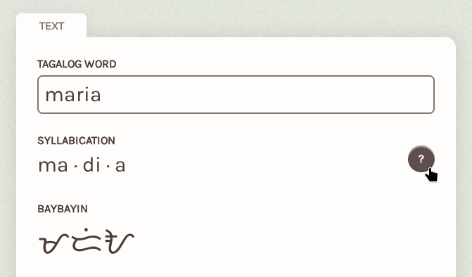
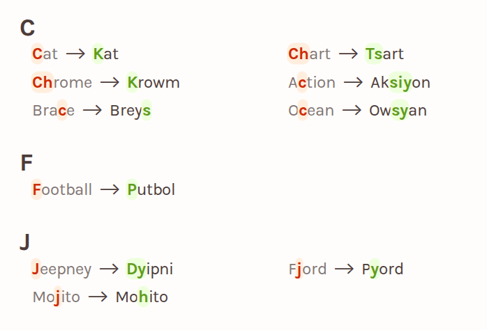
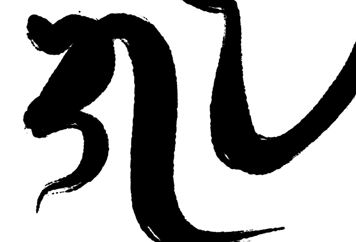
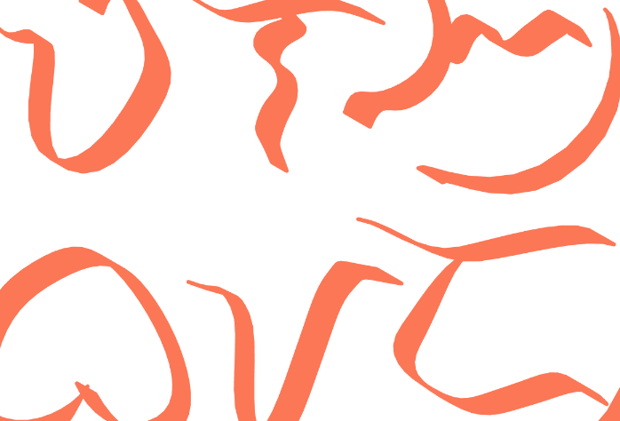

GuhitKudlit is a free webapp for making Baybayin calligraphy. I started this project in 2023 and have kept improving it since. I’m a software engineer by day and this was born of my interest in procedural art and Baybayin.
I first learned about Baybayin in elementary school. Back then it was just a piece of ancient history, no one really used it. But nowadays you could see Baybayin on signs, logos, clothing, jeepneys, and tattoos. More and more Filipinos are using Baybayin, although sometimes it’s only for the aesthetic.
Sometimes aesthetics become the sole focus that the right spelling and meaning of the words are lost. Sometimes you’d see permanent tattoos that on closer look are actually unintelligible. Often we choose convenience over correctness (especially now with AI adding fuel to the fire).
So I started GuhitKudlit. Aesthetics, ease of use, and correctness can still go together, right? With these goals in mind, I settled into a few guiding principles for this project.

Transparency with spelling
When I first made GuhitKudlit v1, it was the only Baybayin app that showed how the syllabication worked. Others just gave you an answer with no explanation. How would you know whether the Baybayin was accurate? When anyone, even non-experts, is given the means to easily verify the output, we can get better Baybayin to more people. On top of that, users will naturally learn when they can see how it works.

No smarts
I admit GuhitKudlit isn’t very smart, and that’s fine because real intelligence comes from humans. When something is unclear, like foreign letters, GuhitKudlit lets you decide how to disambiguate and respell it as you possess the right context around the word or name you want to convey. This way, you can get a result you can be proud of.

Crafted calligraphy
The calligraphy is procedurally generated using handcrafted art algorithms I’ve developed over the years. GuhitKudlit v2 uses a system of hand-authored Baybayin vector glyphs, mathematical layout and composition optimizations, and various brush and paint simulations. It doesn’t use AI image generators or fonts.

Free for everyone
Everything GuhitKudlit can do is free of charge. All styles, color choices, and more are free for everyone. Honestly, making projects like this is both passion and hobby, and I’m happy to see people use and enjoy them.
In the this age where any question can have instant random answers, I’m afraid we may start forgetting the real form, usage, and history of the Baybayin script. I hope that through this project, I can help enrich and preserve Baybayin for future generations. - ᜎᜒᜌᜈ᜕ (Lean)
Ang GuhitKudlit ay isang libreng webapp na panggawa ng kaligrapiyang Baybayin. Sinimulan ko ang proyektong to noong 2023 at patuloy na pinagpabuti hanggang ngayon. Ako ay isang software engineer sa araw at ito ay bunga ng hilig ko sa procedural art at Baybayin.
Una kong natutunan ang Baybayin noong elementarya. Noon ay isang lumang piraso lang ito ng kasaysayan, wala talagang gumagamit nito. Pero ngayon makikita mo na ang Baybayin sa mga karatula, logo, damit, sa dyipni, at mga tato. Dumarami na ang mga Pilipinong gumagamit ng Baybayin, kahit minsan pang-estetik lang.
Minsan hanggang estetik lang talaga kasi mali na yung hulog at mismong pagkakabaybay. Minsan makakakita ka ng permanenteng tato pero di maintidihan pag binasa. Madalas kasi, pinipili natin ang madali kahit di tama (lalo na ngayong may AI na na nakikisawsaw pa).
Kaya sinimulan ko ang GuhitKudlit. Kaya namang pagsabayin ang estetik, madaling gamit, at kawastuhan di ba? Para makamtan to, nagkaroon ako ng ilang mga prinsipyo para sa proyektong to.
Malinaw na pagkakabaybay
Noong una kong ginawa ang GuhitKudlit v1, ito lang ang tanging Baybayin app na pinapakita yung pagkakapantig at pagbaybay. Sa iba kasi binibigay lang ang sagot nang walang paliwanag. E paano mo malalaman kung tama yung Baybayin? Kapag kahit sino, maging di eksperto, ay binigyan ng kakayahang suriin ang output, mas gaganda ang Baybayin para sa lahat. Bukod pa ron, natural na matututo sila kung makikita nila kung paano nangyari ang proseso.
Walang dunung-dunungan
Aaminin kong hindi masyadong matalino ang GuhitKudlit, at tama lang yon dahil ang tunay na karunungan ay nasa tao. Kapag may di malinaw, gaya ng banyagang letra, hahayaan niyang ikaw ang magpasya kung paano yon lilinawin bilang ikaw na may tamang konteksto sa salita o pangalan na gusto mong iparating. Sa ganitong paraan, makakakuha ka ng resultang maipagmamalaki mo.
Kaligrapiyang tila gawang-kamay
Ang kaligrapiya nito ay galing sa mga algoritmong pangsining na nilikha at pinagpabuti ko nang ilang taon. Ang GuhitKudlit v2 ay gumagamit ng minanu-manong vector para sa bawat simbolong Baybayin, matematikal na paglapat at pagkomposisyon, at simulasyon ng ᜁᜊᜁᜊᜅ᜕ pinsel at pintura. Di ito gumagamit ng AI image generator at wala ring font na gamit.
Libre para sa lahat
Lahat ng kayang gawin sa GuhitKudlit ay walang bayad. Lahat ng istilo, pagpipilian ng kulay, at iba pa ay libre para sa lahat. Sa totoo lang, ang paggawa ng ganitong mga proyekto ay isang dedikasyon at libangan ko na rin, at masaya na akong may gumagamit at natutuwa sa mga to.
Sa panahon kung saan kahit anong tanong ay sa isang pindot may basta-bastang sagot, natatakot akong baka malimutan natin ang tunay na anyo, paggamit, at kasaysayan ng sulat Baybayin. Sana sa pamamagitan ng proyektong to, makatulong ako sa pagpayaman at pagpanatili ng Baybayin para sa susunod na mga henerasyon. - ᜎᜒᜌᜈ᜕ (Lean)